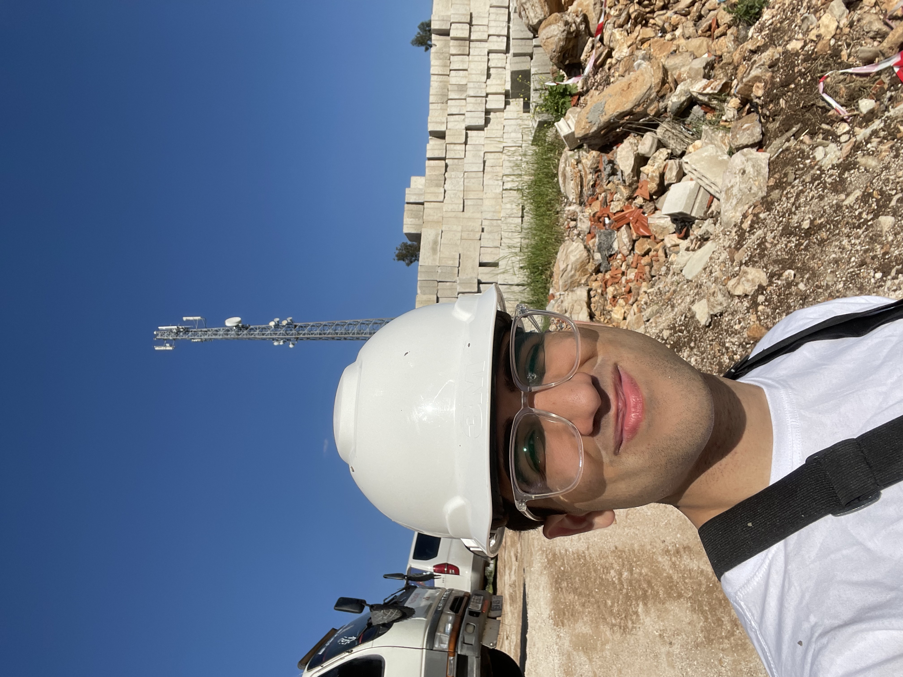
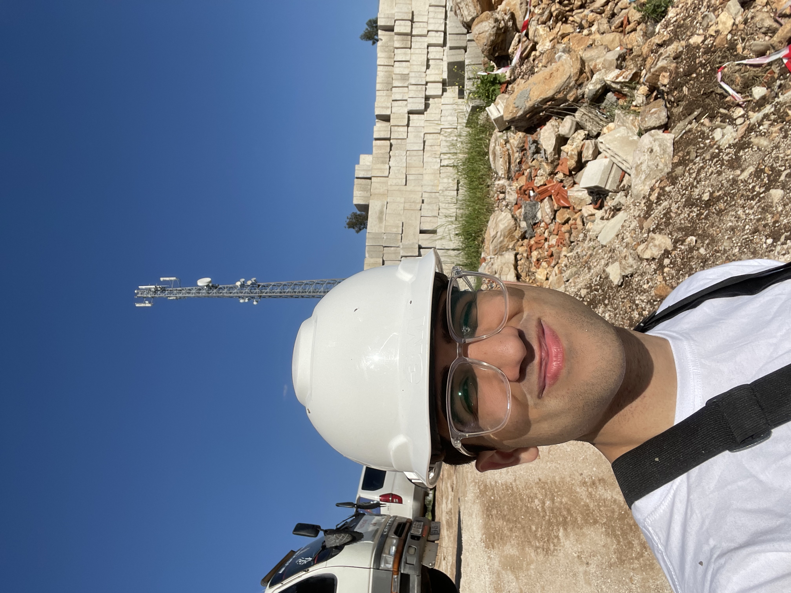

NYU Abu Dhabi 2022 Engineering Ethics Trip to Jordan - Habitat for Humanity

I had the opportunity to visit Ajloun, Jordan as part of an ethnography trip organized by NYU Abu Dhabi's Engineering Ethics course. The purpose of our journey was to actively contribute to the local community through a collaborative project.
During our stay in Ajloun, we participated in the construction of a much-needed community service center. This project was a joint effort between NYU Abu Dhabi and Habitat for Humanity, an NGO committed to providing safe and affordable housing to those in need. This trip allowed us to put our knowledge into practice by utilizing our technical skills to create a positive impact on people's lives. The community service center we helped build was designed to serve as a hub for educational programs, health initiatives, and social gatherings. Beyond the construction activities, our trip to Ajloun allowed us to engage with the local culture and form meaningful connections with the people of Jordan.
Overall, my time in Ajloun, Jordan as part of NYU Abu Dhabi's Engineering Ethics trip was an unforgettable journey filled with personal growth, cultural immersion, and the satisfaction of making a tangible difference. It is a memory that will forever remind me of the importance of leveraging our skills for the betterment of society and nurturing a global perspective as responsible engineers.
Building Site Photos:
 
